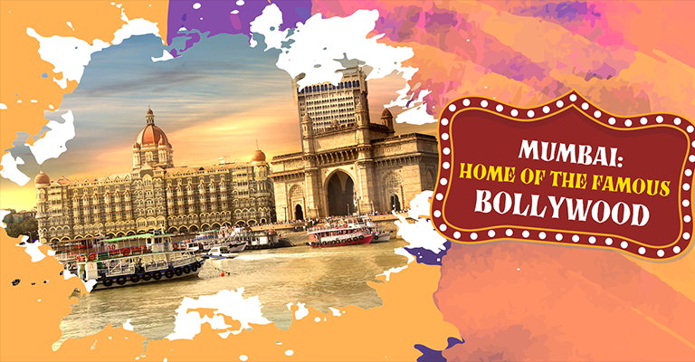
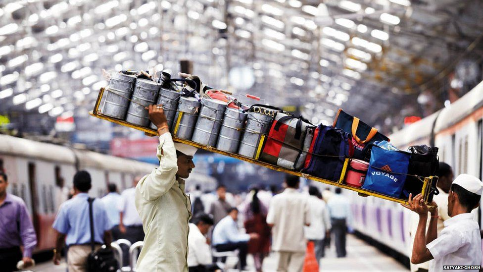
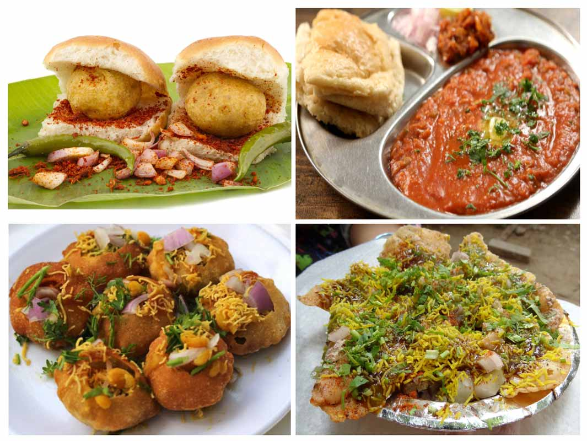
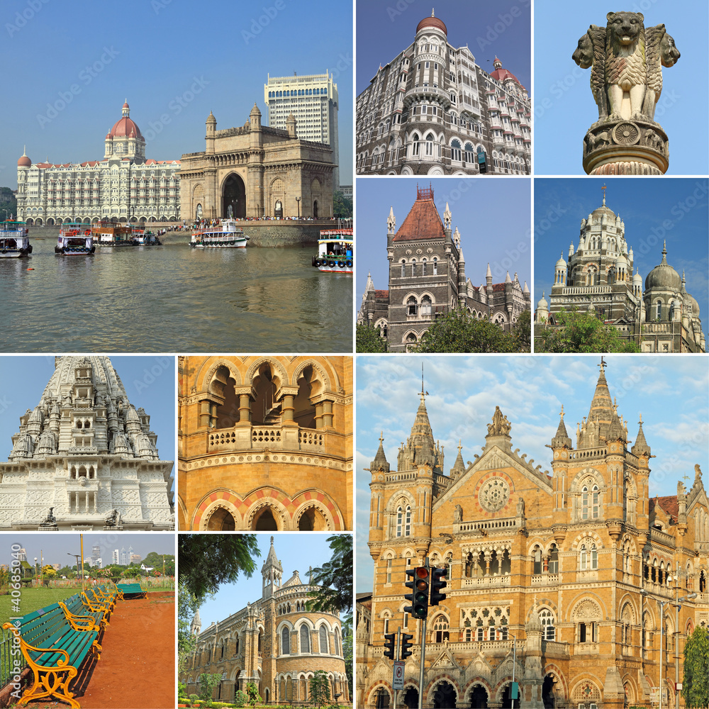
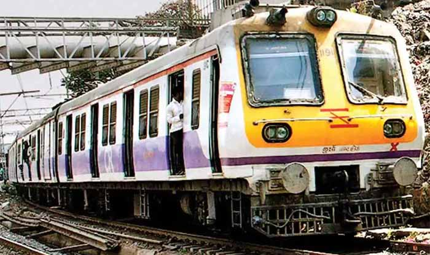
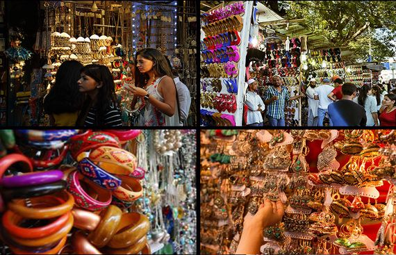
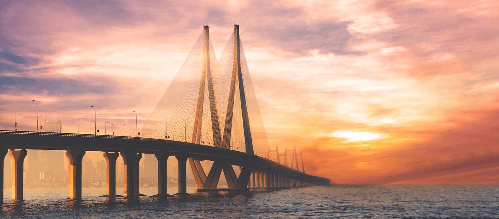

Exploring the Marvels of Mumbai
Mumbai, formerly known as Bombay, is a city that never sleeps. It's a place where dreams come true, where old-world charm meets modernity, and where the aroma of street food fills the air. Visiting Mumbai is like taking a whirlwind journey through time and culture. Let's dive into the vibrant and diverse experiences that this city has to offer.
The Gateway of India

Your exploration of Mumbai must begin at the iconic Gateway of India. Built in 1924 to commemorate the visit of King George V and Queen Mary, this colossal arch stands tall at the edge of the Arabian Sea. It's a place where tourists and locals gather to marvel at the architecture, take boat rides, and enjoy the bustling atmosphere.
Marine Drive - The Queen's Necklace

As the sun sets over the Arabian Sea, a visit to Marine Drive is a must. This curving boulevard, often referred to as the Queen's Necklace, is lined with twinkling streetlights that resemble a string of pearls. It's a serene spot to unwind, take a leisurely walk, or simply sit and watch the waves crash against the shore.
Bollywood Magic

Mumbai is the heart of the Indian film industry, often lovingly referred to as Bollywood. If you're a cinephile, don't miss the chance to visit Film City or take a Bollywood studio tour. You might even spot a famous actor or catch a glimpse of a movie being shot.
The Dabbawalas of Mumbai

For a unique cultural experience, explore the world of Mumbai's dabbawalas. These lunchbox deliverymen have been efficiently delivering homemade meals to office workers for over a century. Witness their precision and dedication as they transport thousands of lunchboxes across the city daily.
Street Food Heaven

Mumbai's street food is legendary. From vada pav (a spicy potato burger) to pav bhaji (a flavorful vegetable curry served with bread), you'll find a vast array of delectable treats on the streets. For seafood lovers, a visit to the seafood stalls of Juhu Beach is a must.
Historic and Religious Sites

Mumbai boasts a rich history and is home to several historic and religious sites. The Chhatrapati Shivaji Terminus, a UNESCO World Heritage site, is a masterpiece of Victorian Gothic architecture. You can also visit the Siddhivinayak Temple, Haji Ali Dargah, and Elephanta Caves to explore the spiritual side of Mumbai.
The Local Trains

Mumbai's local train network is the lifeline of the city, and a ride on these crowded trains is an experience in itself. The local trains connect the suburbs to the heart of the city and provide a glimpse into the daily lives of Mumbaikars.
Shopping Extravaganza

From vibrant street markets like Colaba Causeway and Linking Road to high-end malls like Palladium, Mumbai offers a shopping experience for every budget. Don't forget to explore the charming boutiques in Bandra and the bustling markets of Crawford Market.
Wrap-Up

Mumbai is a city of dreams, and it never ceases to amaze visitors with its energy, diversity, and cultural richness. Whether you're exploring historic landmarks, savoring street food, or experiencing the magic of Bollywood, Mumbai will leave an indelible mark on your heart.
So, pack your bags, embark on this incredible journey, and let Mumbai enchant you with its endless treasures and boundless charm.
Comments
James Green
Posted on: October 3, 2023
A must visit place.
Add a comment